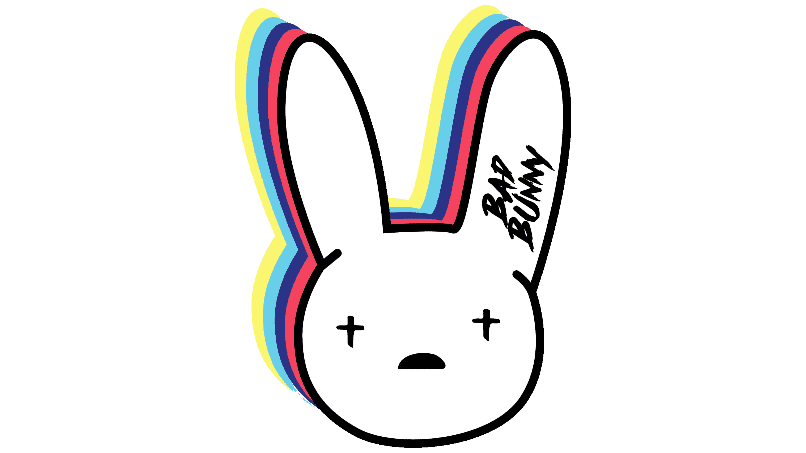
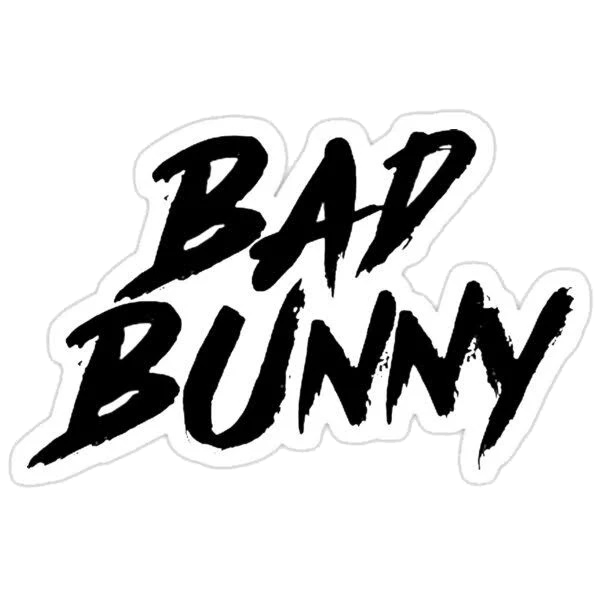

“Yonaguni” es el segundo sencillo que Bad Bunny lanza durante el año 2021. El título de la canción hace alusión a la isla japonesa Yonaguni. En esta isla se encuentran las Estructuras de Yonaguni, que —se especula— son vestigios de una ciudad antigua que terminó siendo sumergida bajo el océano.
Yeah-yeah-yeah-yeah
Yeah-yeah-yeah-yeah-yeah-yeah
Yeah-yeah-yeah-eh-yeah
Una noche más y copas de más
Tú no me dejas en paz, de mi mente no te vas
Aunque sé que no debo, ey
Pensar en ti, bebé, pero cuando bebo
Me viene tu nombre, tu cara, tu risa y tu pelo, ey
Dime dónde tú está', que yo por ti cojo un vuelo
Y a Yonaguni le llego
Aunque sé que no debo, ey
Pensar en ti, bebé, pero cuando bebo
Me viene tu nombre, tu cara
Tu risa y tu pelo, ey
Dime dónde tú está', que yo por ti cojo un vuelo
Y a Yonaguni le llego, ey
No me busque' en Instagram
Mami, búscame en casa
Pa' que vea' lo que pasa, ey
Si tú me pruebas te casa', ey
Ese cabrón ni te abraza
Y yo loco por tocarte
Pero ni me atrevo a textearte
Tú con cualquier outfit la parte'
Mami, tú eres aparte
Shorty tiene un culo bien grande, eh
De-demasiao' grande
Y yo lo tengo estudiao', ya mismo me gradúo
Y en la cara me lo tatúo
Vi que viste mi story y subiste una pa' mí
Yo que me iba a dormir, ey
En la disco habían mil
Y yo bailando contigo en mi mente
Aunque sé que no debo
Pensar en ti, bebé, pero cuando bebo
Me viene tu nombre, tu cara
Tu risa y tu pelo, ey
Dime dónde tú está', que yo por ti cojo un vuelo
Y a Yonaguni le llego
Si me das tu dirección, yo te mando mil carta'
Si me das tu cuenta de banco, un millón de peso'
To'a la noche arrodillao' a Dios le rezo
Pa' que ante' 'e que se acabe el año tú me des un beso
Y empezar el 2023 bien cabrón
Contigo y un blunt
Tú te ve' asesina con ese mahón
Me matas sin un pistolón
Y yo te compro un Banshee
Gucci, Givenchy
Un poodle, un frenchie
El pasto, los munchie'
Te canto un mariachi
Me convierto en Itachi, eh
Yeah-yeah-yeah-yeah
Bad Bunny, baby, bebé
Bad Bunny, baby, bebé